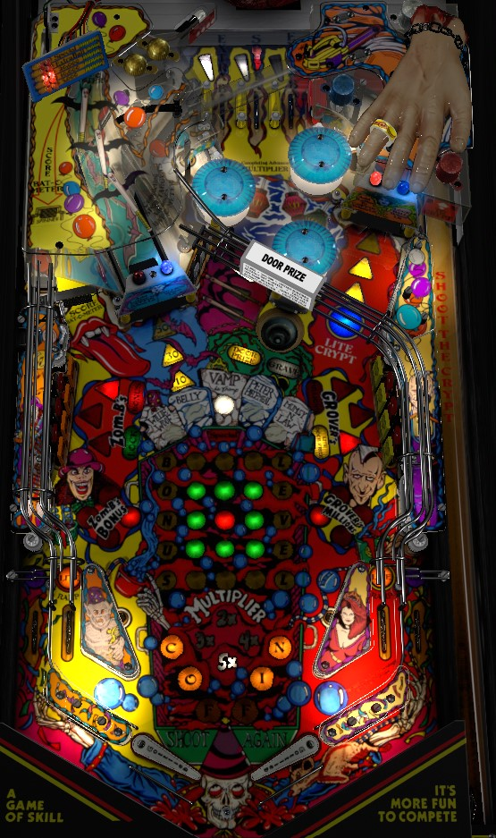

If the blue light above the right ramp is lit, shoot it to lock a ball; 2-ball multiball will begin as soon as the second ball hits the playfield. During multiball, the left ramp scores 1,000,000 points. Most copies of Class of 1812 can backhand their left ramps on the fly, so trap one ball on the right flipper and backhand the left ramp all day. If you're in single ball play and the right ramp is not lit for Lock Ball, complete the left drop targets to relight the lock, or combo the ramps back and forth for Coffin letters and an increasing award. Spelling Coffin scores a Jackpot worth 2,000,000.
The skill shot is a precise-power plunge to a hidden top lane just left of the three visible top lanes. This hidden lane is the Crypt and scores 1,000,000 points. The Crypt can be collected during normal gameplay as well; collecting the 1,000,000 unlights the Crypt, and making the right ramp will relight the Crypt.
Unlike most Gottlieb games, you need to roll through an unlit top lane to light it. Lighting all 3 top lanes increases the bonus multiplier by 1x toward its maximum of 7x. Advancing to 6x bonus lights the left and right top lanes alternately for extra ball. Advancing to 7x lights the center top lane for Special. Advancing past 7x scores 1,000,000 points. The playfield lights only count multipliers up to 5x; 6x and 7x are shown by lighting both 4x and 2x or both 5x and 2x, respectively. Bonus multiplier carries over from ball to ball. Bumpers score 3,000 points.
At the start of the game, the right ramp is qualified to lock a ball for multiball. If the right ramp is not lit for Lock Ball (look at the blue light above the ramp, not a playfield insert), you'll need to clear the left drop targets to light the lock. Depending on game settings, it may take 1 or 2 left drop target completions to light the lock. If lock is lit at the right ramp and the ball enters the Crypt via anything other than a skill shot, that also counts as locking a ball. When a ball is locked, the entire playfield goes dark for a second before the heart on the back panel starts beating and you are told to shoot the ball.
The main attraction in multiball is the left ramp. All shots up the ramp score 1,000,000 points during multiball. You cannot start Zom-B's Bonus, Grover's Millions, or earn Coffin letters during multiball, so just plug the ramps as much as you can. On every copy of Class of 1812 that I've ever seen, the left ramp is able to be backhand with an on-the-fly left flipper shot. If this is possible, simply hold one ball on the right flipper and loop the other ball up the left ramp with the left flipper as many times as you can until you miss. When multiball ends, the left ramp remains lit for 1,000,000 points until you hit a switch anywhere in the game that is not one of the ramps or one of the in lanes. During multiball, the center saucer is lit for Grave, but this doesn't seem to do anything in particular.
The left in lane briefly lights the right ramp for Coffin Letter, and the right in lane briefly lights the left ramp for Coffin Letter, as long as no multiball or timed feature is running. Collecting a Coffin letter scores 100,000 points; if you collect multiple Coffin letters by comboing the ramps back and forth without missing, each Coffin letter will be worth 100,000 more points than the last, up to a maximum of 1,000,000 points per letter (which glitches out the alphanumeric display slightly). Every time Coffin is spelled, you score a jackpot worth 2,000,000 points.
Complete the left or right drop targets when the bank is lit red to start a mode.
The left drop target mode is Zom-B's Bonus, which is a hurry-up that starts at 6,000,000 points and quickly counts down to 2,000,000. One of the three standup targets behind the left drops will be lit with a red triangle. Hit the lit standup target to collect the remaining hurry-up value and end the mode.
The right drop target mode is Grover's Millions. You have 15 long seconds (about 30 real seconds) to hit all of the lit standup targets, indicated by red triangles. Doing so scores 2,000,000 points, restarts the mode timer, and relights some of the right standup targets. The first 2,000,000 always takes only one target, and the second 2,000,000 always takes two targets; after that, all odd-numbered 2,000,000s need all 3 targets, and even-numbered 2,000,000s need just one or two targets. This mode continues until times runs out or the ball drains.
Multiball cannot be started during a mode, and the modes cannot stack with each other.
When Zom-B's Bonus ends, the game checks to see if the right ramp is lit for Lock Ball. If it is not, the next completion of the left drop targets will light the lock, and one further completion is required to play Zom-B's Bonus again. If Lock Ball was already lit when Zom-B's Bonus ends, you can immediately play Zom-B's Bonus again with the next completion of the left drop targets. The same rules apply to the right drop target bank when Grover's Millions ends, but instead of lighting the right ramp for Lock Ball, the right drop targets will relight the Door Prize mystery at the center scoop if it is not lit.
The left ramp starts each ball at a value of 5,000 points per spin. To advance this, complete the white standup targets in the center of the playfield near the exit to the bumper area by hitting lit targets to unlight them. Completing these targets advances the spinner value 10,000 per spin, then 20,000 per spin. The third completion of the white targets in one ball lights the spinner for an instant extra ball, and the fourth completion lights the spinner for instant Special. Extra ball and special can only be collected from the spinner once per ball. The spinner is reset to its base value of 5,000 per spin at the end of each ball.
Door Prize is this game's mystery award. Door Prize is lit at the start of each ball, or by completing the right drop targets when they are not lit for Grover's Millions. Door Prize awards are listed just above the saucer, and include:
Class of 1812 has a conventional in/out lane setup. In lanes can be lit for Lite Ramp, which lights the opposite ramp for a Coffin letter if no mode or multiball is running. Out lanes are lit for Extra Ball as a Door Prize award.
Any rollover lane, drop target, lit standup target, or spinner shot advances the bonus. Each light in the center grid is worth 5,000 points in base bonus. Completing the grid lights one of the character gravestones at the top and starts a new grid. Maxing out the base bonus by completing 6 grids in a single ball scores an instant Special. Bonus multiplier is advanced by completing the three top lanes. Max bonus is 7x 750,000 = 5,250,000 points. Base bonus is never carried from ball to ball; bonus multiplier is always carried over. There is no mid-ball bonus collect.
In competition/novelty play, extra ball and Special score 1,000,000 points each.